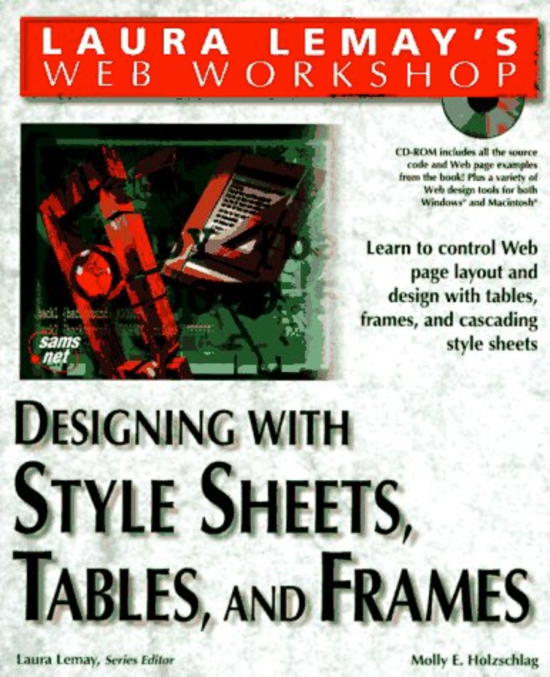
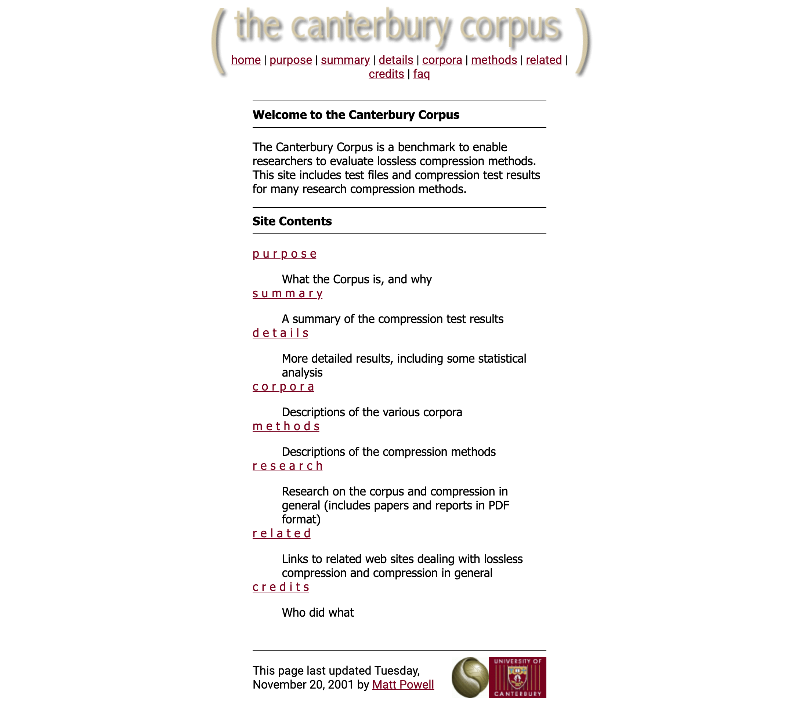
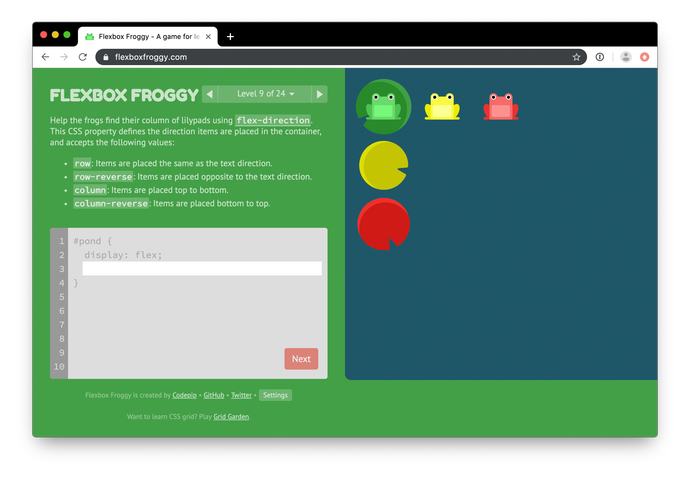

It’s just makeup!
How to care about CSS
Matt Powell (@fauxparse )
Kia ora koutou. E mihi ana ki ngā wāhi tapu o Te Ātiawa me Ngāti Toa.
Ko Matt Powell ahau. Kei Optimal Workshop e mahi ana.
Nō reira, tēnā koutou, tēnā koutou, tēnā tātou katoa.
Other disclaimer
I said this talk didn’t require any technical background. That’s
completely true, but I do mention one or two technical things from
time to time. Please feel free to glaze over: I can’t see you well
enough to be offended by it.
But also, as I hope you’ll see, I think
a lot of this stuff is applicable in a broader context. Maybe it’s
best to think of my use of CSS here as kind of an extended
metaphor.
(Real quick: What is CSS?)
CSS, or Cascading Style Sheets, is kind of the de facto visual
language of the internet. You may or may not know this, and that’s
okay. All you need to know is that CSS can do everything from
Hello, world!
+
color: #F50057;
=
Hello, world!
this, where some plain text is combined with a simple rule to add a pleasant colour...
...to this incredible work, "Francine" by CSS artist Diana Smith. Everything in this portrait is an HTML element styled, by hand, in CSS.
The other thing you need to know about CSS is that, in 1997, CSS almost made me fail high school Calculus.
Actually, that’s unfair. Undiagnosed ADHD and a distinct lack of
affinity for trigonometry almost made me fail Calculus. But also I
spent a lot of time reading books under the desk, and I don’t mean
Dragons Of Autumn Twilight.

I mean this book: Designing with Style Sheets, Tables, and Frames, by Molly Holzschlag. I was 16, MySpace wouldn’t exist for another 6 years, and so every few weeks I was redesigning my hypothetical personal homepage
[footage not found]
(which would never be launched because I had nowhere to host it) using a combination of animated GIFs, Kai’s Power Tools, and the brand new Microsoft Internet Explorer 3. CSS captured my attention because it was a simple language with a tiny grammar and just 52 properties, but it allowed me to experiment with my designs: if I changed a style in one place, it would update everything on both pages of my website (“welcome” and “links”). No more font tags everywhere! This was the future!

Fast forward a couple of years, and I’m in the second year of a Computer Science degree at Canterbury, having survived first-year university Calculus by an even narrower margin and vowed never to touch it again. The topic of this morning’s tutorial: Cascading Style Sheets. The example: a web page I’d built for the department as a part-time job, and which is still online to this day. I took the rest of the morning off.
A couple of years later, fresh out of university, I got a job with a Christchurch web design firm. This is significant because I was the first person they’d hired who didn’t know how to use Dreamweaver. I coded all my web pages by hand in HotDog or Edit Plus — still with a lot of tables, although CSS 2 was out by now and I was starting to sneak some floats into my work. It was kind of a watershed moment for web design, the beginning of the end of a brief foray into WYSIWYG development, back to the old way of writing code to describe how we wanted the output to look, and although Flash took much longer to finally relinquish its grip on the hearts and minds of design school graduates, CSS was the shiny golden child of the internet. We were still a few years away from the great web renaissance of “Web 2.0”, but CSS was going to get us there.
[footage not found]
I’m telling you all this personal history not to document my meteoric rise to the giddy heights of web design stardom*, but because in thinking about it while preparing this talk, I realised that CSS and I have kind of grown up together. I was using it when it was just for controlling text formatting, and I’m still using it now when it’s responsible for layout, animation, interactive behaviour, accessibility, and even art.
My grandad couldn't abide poorly polished shoes, so my mum would
leave her shoes near him, and he'd be incapable of resisting
polishing them.
At redacted, we all do the same thing with Matt
and our CSS.
As such, I’m fortunate to have a perspective on CSS that comes from an awareness of its history. I happen to love CSS, and so I get testimonials like this.
But not everyone has this perspective, and so modern CSS, especially as part of a complex development setup, can seem confusing, daunting, or magical.
There are a lot of
Myths about CSS
All of which is to say: if you don’t understand CSS or know what it is or where it came from, I get it. But I do think there are a lot of myths around CSS, and I want to unpick some of them. Alright? Great.
Myth #1
CSS is weird/confusing/magic
At its heart, CSS is very simple:
rules apply properties to elements
more specific styles overrideless specific ones
It’s getting more powerful and better supported, but not more complex .
CSS has changed a lot in the last 22 years. But one thing that hasn’t changed is how it works:
Rules apply properties to elements. That’s the stylesheet part.
Child elements inherit properties from their parents, unless a more specific rule says otherwise. That’s the cascading part.
That’s all. In 22 years, there hasn’t been a third “thing” that makes CSS more complicated. Everything else — browser bugs, quirks mode, vendor-specific properties, media queries, responsive design, CSS variables, SASS-style CSS transpilers, Flexbox, Grid, CSS-in-JS libraries… none of this has changed the fundamental way CSS works to style content. Everything comes back to those two basic ideas: applying properties to elements, and deciding which rules to apply.
Myth #1
CSS is weird/confusing/magic
…but you can do weird/confusing
I will grant that some of the ways we use CSS have become more complicated and confusing. Right now I’m working on a piece of code to pull variables out of a SASS file into JavaScript, and use that JavaScript to generate a stylesheet, and when I put it like that it sounds like the sort of thing a movie detective would find scrawled in rough charcoal and human blood on the wall of a suspect’s abandoned loft, and maybe I need to think it through again;
but fundamentally I am applying properties to elements, with varying levels of specificity.
So if you find yourself thinking “CSS is just too weird for me to understand”, ask yourself: is it? How much of this confusion isn’t actually about applying properties to elements? How much of it is confusion about Webpack configuration, or React styled components, or SASS syntax, or the Rails asset pipeline, or vendor-specific properties, or Internet Explorer bugs? How much of it could I clear up by reading a guide or tutorial on the way specific properties work and interact? Once you start to bring everything back to “I’m just applying properties to elements”, you can look at a flexbox tutorial in isolation because suddenly you’re only thinking about a single concept, not the entire language. I guess I’m saying: if you’re here today as someone who works with web pages and you still believe CSS is a weird complicated mess, you owe it to yourself to get over yourself.
Myth #2
CSS isn’t “real” code
You write it in a text editor
It has syntax (and syntax arguments)
It affects the behaviour of your software
Surprise! HTML + CSS is Turing complete
CSS is more than just applying properties to elements. Consider:
The biggest surprise of all is that CSS (together with some HTML elements for it to act on) is Turing Complete. This is one of those technical bits, but basically this means that any problem you can solve in a “hard” programming language like C++, you can (in principle) solve in CSS, although this is a little like saying you could in theory carve out the Mt Vic tunnel with an emery board. Different tools for different problems.
Still: the people who truly understand CSS are capable of doing some incredible things with it.
And the more complicated and venerable our CSS-powered sites become, the more maintenance and discipline is required to keep the stylesheets updated and maintained and refactored and spaghetti-free. Just. Like. Real. Code.
Myth #3
CSS encourages bad coding habits
This is maybe less common, but I’ve definitely heard it. A peculiarity of CSS is that, because its primary purpose is to change the appearance of something that already exists (by applying properties to elements, naturally), rather than adding something new, many developers’ only exposure to CSS is adding code to override something someone else has done. Once the output in the browser matches the design, the work is “finished”, and unless you can be bothered figuring out why this particular element required this particular override, and changing your code to match that intention, your CSS becomes a brittle stack of special cases and hacks.
Myth #3
CSS encourages bad coding habits
Bad coding habits don't come from bad tools, they come from bad attitudes
But just because the way a project’s stylesheet evolves over time to some extent enables this lazy behaviour, doesn’t mean that CSS encourages laziness. Bad coding habits don’t come from bad tools, they come from bad attitudes. If your mindset is that this file you’re forced to edit to finish this user story is full of weird squiggly magic, of course you’re going to want to spend as little time in there as possible, making the smallest possible change in the most specific way so that you don’t break anything for anyone else. But because of how this tool works, if you make your change very very specific, the next person has to make their change very very very specific, and so on. You owe it to them to be willing to dig deeper and get more context. Just like any other code you work on.
Myth #4
CSS is just cosmetic
More and more, CSS implements behaviour
Cosmetics directly add business value
CSS started as a way to centralise the appearance changes we were hard-coding with <font> tags, but it’s very quickly become more than that: more and more, CSS is used to implement behaviour. Without CSS to show and hide elements, there are no accordions, menus, or tabbed interfaces. Without CSS animations and transforms, there are no image carousels. Without CSS media queries, we’re back to “click here for print version”, and completely separate mobile sites. To slip into management speak for a second: CSS directly adds business value by increasing user engagement—some of this is because people like sites that look pretty, but so much of it is the ability to accomplish effects and interactions that we take for granted.
So, as you can see, I have kind of a chip on my shoulder about CSS, because you stick up for the things you care about. But the more I started thinking consciously about this stuff, the more I started noticing tweets like these:
While I was researching I came across this gem:
Would love to add some women to my startup team. CSS front end devs especially
So after reading all these tweets, I realised:
CSS is cosmetic!
When done well, it looks amazing
A lot of straight dudes simply
…they just complain when it isn’t there
Almost everything worthwhile I’ve ever learned about CSS has been from a woman
Some of my CSS heroes
Molly Holzschlag
Jen Simmons
Sara Soueidan
Léa Verou
Estelle Weyl
Of course, they’re some of the same people making these observations…
What the heck happened? How did we get here? I kind of have a theory, and I’ll get to that in a moment, but first I want to acknowledge that we are here:
Our attitude to CSS
This might be surprising to you. It might even be shocking. When I say this I don’t mean it as an accusation, but as a statement of what I see happening in our community.
It’s a big generalisation: not all CSS is written by women, and not all women write CSS. But our society urges women at every turn to consider form and utility hand in hand in a way that is much less often demanded of men. And there’s a definite tendency in our industry, in the wider context of patriarchal society, to cast the “soft” work of front-end development as feminine, and the “hard” back-end work as masculine, with the result that average starting salaries for the two roles exhibit a gap that is more or less commensurate with the gender pay gap in general.
(this is not news)
I’m far from the first person to point this out. I’m probably not even the first person in this room. Wellington developers Aurynn Shaw and Simon Carryer have both written excellent articles on the way our society confers value on masculine activities and traits, and the way in which these attitudes affect the tech community in particular by coding certain types of work and certain programming languages as feminine and therefore of lesser value, and these articles in particular have directly influenced this talk.
So my first challenge is this:
Challenge
Think about your own organisation. Who is responsible for the bulk of the CSS work?
Think about your own organisation. Who is responsible for the bulk of the front-end or “cosmetic” work in your team? How does that compare with the overall gender balance in your organisation?
So now that we have this context, I want to go back through those myths I mentioned earlier. We’ll go in reverse order, just for the sake of variety, and when we read them, I’d like us, just so we’re all on the same page, to imagine them as being said by a man to a colleague who is a woman or non-binary person.
Myths in context #4
CSS is just cosmetic
“The way your work looks is unimportant”
What does it mean to hear this?
What I hear is “the way your work looks is unimportant”, which, aside from being patently untrue, is pretty hurtful. Being told your work is unimportant, but being expected to complete it to a high standard. It reminds me, in fact, of straight men who say they prefer women “without too much makeup”, or with “a natural look” (as if anyone was asking them, or wearing makeup exclusively for their benefit). Incidentally, there are CSS libraries available to give your work “a natural look”.
This is the website of normalize.js, a popular "CSS reset" library...
...and this is what that website looks like without CSS. It turns out it takes a lot of work to look natural.
But that’s the way I hear it. Imagine I had also been told, from birth, that the way I look is of the utmost importance socially. Then, is it inconceivable that I might hear it as “the way your work looks matters less than the way you look”? What would that do to my self esteem?
Myths in context #3
CSS encourages bad coding habits
“I don’t understand your code,
As I’ve said, this is a contentious one. But I’d like to think that anyone who subscribes to it has probably also not taken the time to interrogate why they think that, or what “good” CSS code might look like. And if you can’t tell good code from bad, why are you saying anything at all? It boils down to this: “I don’t understand your code, so it must be wrong”.
Coming from anyone, this enforces an unhealthy and stigmatising power dynamic, and there’s a lot of important work already out there on identifying and depowering biases, particularly in code review and pair coding. But I want to highlight the way that this particular attitude doubles down on existing biases and stigmas. More on that in a bit.
Myths in context #2
CSS isn’t “real” code
“You don’t write real code”
“You are not a real coder”
“You don’t belong in this squad/team/company/career”
This is hopefully a pretty obvious slope, but let’s examine the steps:
Incidentally, a similar case could be made about testing, which is absolutely vital work that, again, is dominated, at least in organisations I’ve worked in, by women—at any rate, they’ve been the best at it and lasted the longest. Again, your experience may vary, and if so, I’m happy for you. But the fact that these imbalances happen anywhere is a challenge to us all to do more.
Myths in context #1
CSS is weird/confusing/magic
“I’m afraid of CSS”
“I’m afraid of you”
Even if you mean "magic" as a compliment, this one reads pretty readily as “I’m afraid of CSS”. But have you ever stopped to think how short the leap is from there to “I’m afraid of you”?
I know that sounds like I’m being hyperbolic. But our language matters! Whenever we talk about a person’s particular skill being “magic”, we are, at best, betraying our own jealousy of a mastery someone might have trained their whole life to achieve. At worst, we come across (whether we intend it or not) as accusing that person of having skills they don’t deserve or didn’t earn. And that intersection of fear, misunderstanding, and gender is a potent one with deep roots.
This is a real thing that actually happened! To real women! For centuries!
I want to come back to “whether we intend it or not”. This whole talk might sound like a load of virtue-signalling, social-justice whinging to you, in which case, the sea is just through those doors and I heartily encourage you to get in it.
But I don’t mean it like that!
But if you’re thinking, hold on, maybe I have said some of those things, but I didn’t mean those other things you said I meant, I have some bad news. We don’t get to decide what our words mean, especially not when we say them to people whose experience may be vastly different from our own. When I say at stand-up, “it’s done, I just have to test it”, even if I’m not being 100% serious, what does that mean to the person in my squad whose entire job is testing my code (and who, as a consequence, finds way more bugs in it than I do)? Does that person have the context and the privilege to allow them to interpret my offhand remark as a joke? Their background is different, their priorities are different, and also they have a realistic idea of how bad I am at testing my own code and how much work is actually left after I’ve “finished” it and thrown it over the fence to them.
Who are you to talk about this?
I’m not a woman…
…but I also don’t think this
So. Who am I to mouth off about all this stuff. Why do I hate men? Am I just saying all this stuff to excuse myself from responsibility?
You’re right, I’m not a woman… but I also don’t think this is a problem for women to fix.
Women have been saying this stuff literally for years, without obvious result. And before CSS, there were other issues: in fact, programming itself used to be considered “women’s work”. But if you look at the tweets I mentioned earlier, the replies generally fall into two categories: people, mostly women, voicing the same frustration, and other people, mostly men, denying the problem exists. And I can’t, by myself, do much about the first category, but I figured I could do something about the second.
It’s my problem
(it’s our problem)
This is a problem created and perpetuated by men, men can make it better, and we have a responsibility to shoulder that burden, and to improve the working environment for people of every discipline within our teams and organisations.
I’m a man, talking about an issue faced by people who are not men. I’m guaranteed to have messed up spectacularly somewhere in this presentation, but I'd rather mess up and learn, than stay silent. In particular, I’m very aware that I’m addressing gender in very binary terms, and I haven’t taken enough time to fully unpack the way I might be using “women” as a shorthand for “people who are not men”, or other gender- or sexuality-related factors present in what I’m talking about.
It’s my problem
(it’s our problem)
Gay and bisexual men can experience some of the same stigmatisation and hostility women face, while still benefitting from the way our society values our masculine attributes. It’s not as simple as the outdated idea of the "battle of the sexes". I’ve chosen to focus on this one axis for this presentation, but really I think it’s a way in to a larger discussion about gatekeeping, discrimination, and what Aurynn Shaw calls “Contempt Culture”: the idea that we create safe spaces for ourselves by exluding and devaluing others.
I <3 CSS
I'm talking from my own experience as a front-end developer who talks to other front-end developers, so again, CSS was an easy way in for me, but there are analogues wherever you are.
I love CSS and I love the people who care about it, but I have interactions with other people too. We all do.
So what can I do?
So what can we do? Without some kind of practical next steps, this talk is only so much hot air. So here are some things that I think we can all practise in our own way, but I’d like to particularly challenge the men in the room, because I am one.
Watch your mouth
The way you talk about this stuff
Number one is watch your mouth. The way we talk about this stuff matters to the people around us. Particularly, when we mouth off about stuff outside our own experience, we center and normalize ourselves and our own worldviews. Coupled with a culture that values some kinds of work above others, and prioritises functionality over aesthetics, we unwittingly leverage existing prejudices to prop ourselves up at others’ expense.
Take a moment to think about the way you talk about the work others do. If you would say “it’s finished, except for the styling”, would you expect someone else to say “it’s all done, it just needs the database layer” or “the UI’s finished and tested, it just needs someone to write the React code, any volunteers”?
Watch your mouth
Stretch goal: Call others out
This has a stretch goal: once you get used to calling yourself out on things like this, you can definitely see it when others do it, and you can and should call them on it. Kindly, and gently, and remembering that they almost certainly don’t mean it maliciously. And in private, if you can: this stuff can be embarrassing and you should give them the chance to reflect and make amends on their own before you put them on blast at a meeting of the entire dev team.
Learn your tools
Take a course/
Number two is learn your tools. Unless you work deep in the bowels of devops, or on some kind of native application, CSS is almost certainly an inescapable part of your ecosystem. Maybe you don’t think it’s vital to your job. But how much do the CSS devs on your team need to know about Bundler and Yarn and Webpack and AWS just to run the app you’re developing? I would argue that we owe it to ourselves and to each other to learn at least a little bit about the tools at each level of our stack, as part of being a supportive, empathetic, cross-functional team. But also, and I swear: it’s fun.

There’s a site where you learn Flexbox properties by matching little frogs with their correct lily pads!
That may or may not appeal to you. Everyone learns differently—but you have to actually commit to doing the learning.
Learn your tools
Stretch goal: Share what you’ve learned.
Stretch goal: once you’ve learned something, share what you’ve learned. The women I listed above are not only lifelong learners, constantly staying at the cutting edge of their profession by reading abstruse technical specifications and staying up late working on weird and wonderful CSS experiments, but they’re also prolific producers of free content. (Side note: whenever your desperate Googling lands you on a clear and well-thought-out blog post or tutorial instead of someone else’s plaintive Stack Overflow, make sure you take note of who the author was, and acknowledge the time they spent making that content so you could read it for free. For CSS content in particular, somewhere between a quarter and a third of the pages like that that I encounter are the work of one developer, Sara Soueidan, who is my absolute idol when it comes to anything to do with CSS or SVG, but if you make a habit of noticing the authors, you soon learn a few names you can absolutely trust and it makes it so much easier to wade through the garbage.)
Learn alongside others
Pair with the CSS experts in your team.
Let them lead you through their
Number three is learn alongside others. Instead of throwing a problem over at your team’s go-to CSS person, (even if you hope they’ll relish the challenge), ask if you can pair with them on a solution. Let them drive, and follow along with their thought process and the way they solve a problem.
This is slightly different from learning on your own, because you’re benefiting from that other person’s years of experience. It’s one thing to know all the different CSS properties and how they affect content; it’s another to know how to choose between floats, flexbox, and grid, or how choosing inline-flex will affect how your component aligns with the text beside it. They gained that experience through years or even decades of hard work, and they’re right there at the next desk with all that knowledge just sitting in their brains. How can you not want to take advantage of that to grow your own ability.
You will get lost along the way. They’ll change one line of code and things will suddenly snap into place in the browser window. You’re not an idiot! You just put your skill points in a different column, or levelled up in Docker or Elixir or Vue instead of figuring out how to make a checkerboard pattern by combining linear gradients (surprisingly difficult), or how to get three columns of equal but arbitrary height with a header above and a footer below (known in CSS circles as the “holy grail” layout). But that feeling of being out of your depth, and of seeing an unfamiliar skill as magic, is just your brain hinting that you have room to grow... if you want to.
Practise humble empathy
Just because you don’t understand something doesn’t mean it’s not worth anyone’s time or effort.
My last challenge is to practise humble empathy. Just because you don’t understand something doesn’t mean it’s not worth anyone’s time or effort. This goes beyond simply not saying things that are going to reinforce these negative attitudes, but training yourself out of even thinking them. And I think this is much bigger and harder than just this talk, and something we can all be continually getting better at. My own particular bugbear at the moment is meetings. I don’t do well with lots of meetings: even aside from needing blocks of quiet time to focus on writing code, somewhat weirdly for someone with a background in improvised theatre, I often find it hard to think productively in meetings, and prefer to gather input and process my thoughts offline so that I can present well-formed ideas, so sometimes I find it hard to understand why my week has so many meetings in it.
Practise humble empathy
Just because you don’t understand something doesn’t mean it’s not worth anyone’s time or effort.
But if I take a moment to put myself in the shoes of the person who called the meeting, often it’s easier to understand why it’s happening and why I’m invited. Maybe they’re someone who likes to work collaboratively and they explicitly don’t want me to turn up with finished ideas! Conversely, maybe you’re someone whose job involves setting up a lot of meetings. Have you taken the time to put yourself in the shoes of the people you’re inviting, so that you know what information they need to feel prepared and comfortable? Will they feel like their presence there is valuable and constructive? Or will they be daydreaming about getting back to their desk and fixing that broken test?
Watch your mouth
Learn your tools
Learn alongside others
Practise humble empathy
We can all do better at this kind of secret kindness. It starts when we recognise that every human being is a unique combination of choices, circumstances, and experiences, and that even the shared social and cultural contexts in which we meet are experienced differently by each individual. Something I take for granted might be something you struggle with on a daily basis; something that gives me an advantage I can’t even see might be something that weighs you down in a way you can’t look past. But people are not silent about these struggles, and if we listen to those around us without unduly taking their complaints personally, we can start to work towards a solution by first addressing our own attitudes with an open heart.
When I read this book in 1997, I had no idea it would play such a big part in my career. I actually met Molly at Webstock almost exactly ten years later, which was every bit as exciting as meeting a movie star.
I also had no idea that the problems I've mentioned here were coming. But now that I've seen them, I can't look away.
Thank you.
(and sorry for tricking you)
I want to thank you all for coming to this talk, which was almost certainly not what you expected it to be. I called it “How To Care About CSS” to trick you into coming to a talk on how to care about one another, and (and here in my notes I have two options depending on the size of the audience) apparently it worked.
Before we go…
I’ve said a lot of things today that might be said to reflect badly on men in particular, and I don’t want to apologise for that. If you, a man, are in the audience today thinking “he said men are mean to CSS developers, but I, a man! am absolutely not doing the bad thing”, then this bit is for you. I am also a man. I am also a CSS developer. Am I mean to… myself? Not if I can help it! And I try to extend that same kindness to other CSS devs. But that doesn’t absolve me of responsibility for the way some men have historically treated some people who are not men. Wow, how is that fair? It’s not. But also I don’t experience any of the harmful effects of that behaviour, so I’m still in a better position to call it out and to try to fix it than the people who do. So instead of complaining that you’re being unfairly lumped in with a small group of bad apples, consider that you, as a person of unimpeachable motives, are in the best position to make a positive difference. You don’t win a prize for not doing anything bad. You also don’t win a prize for doing something good most of the time, but that’s not why you do good things.
I spent the whole time I was writing this talk trying to make a joke out of the weird little fact that CSS is also the name of a Brazilian indie rock group from the early 2000s, and I think the end might be the right place to put it in. The name is short for Cansei de Ser Sexy, which in Portuguese means “tired of being sexy”, and that might be the most concise summation of the state of CSS in 2019 that I can think of.
It’s not just a visual layer, it’s not just something we can demand without putting in effort ourselves, and it’s not just women’s work.
It’s not just makeup.
Questions? Comments? Feedback?
@fauxparse
<3